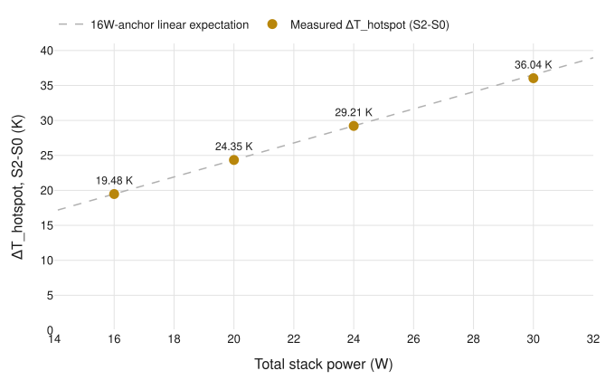

HBM-build
A PyAEDT-scripted Ansys Icepak FEM thermal model of an HBM2E 8-Hi memory stack — cross-validated against an independent compact solver (3D-ICE) and extended to a 30 W high-power regime, supplying the RC parameters the sibling compiler-thermal project consumes.

hbm_thermal/ is pure Python (stdlib only) and unit-testable anywhere;
only scripts/build_icepak_model.py needs Windows + AEDT Student. Output
results/rc_params.csv feeds
compiler-thermal's hotspot ΔT judgment gate.
Try it: step through the power sweep
4 measured power points (16/20/24/30 W), each a real Icepak solve — S0 (uniform power map)
vs S2 (PHY-concentrated power map), base_die_phy max temperature.
These are 4 discrete measurements, not an interpolated curve — no values are shown between them.
Each button is a distinct Icepak solve — no interpolation between them.
16 W is the P3 baseline anchor and the 30 W endpoint used to define the 1.2175 K/W linear trend — reported without a residual since both are trend-defining points, not test points against it. Full derivation: results/p4_report.md §3.
Linearity — ΔT_hotspot vs power, 4 points
base_die_phy max_temp_c, S2−S0, re-derived directly from committed CSVs on every chart rebuild (charts/make_linearity.py)

The two intermediate points (20 W, 24 W) land within +0.56% and +0.94% of the
16W-anchored linear trend — the 30 W endpoint's 1.850× scaling (vs. an expected 1.875× = 30/16)
is not an isolated bracket result, it holds at points in between too
(results/psweep_status.md).
G4 cross-validation — distinguishing artifact from real gap
same reconstruction test applied to both cooling series at 30W — the two series resolve differently
A-series (top-only cooling) — PASS after reconstruction
Original hotspot (max-vs-avg) amplitude ratio: 0.8905, FAIL against [0.9, 1.1]. Icepak and 3D-ICE were never comparable numbers — Icepak reports max, 3D-ICE's compact model only has avg (blocks are lumped, avg≡max there). Reconstructing on matching avg-vs-avg statistics: 1.0137 — inside the pass band. The original FAIL was a comparison-axis artifact, not a physics discrepancy.
B-series (top+bottom cooling) — FAIL persists
B-series' original comparison was already avg-vs-avg — there is no axis mismatch left to reconstruct away. Avg-vs-avg amplitude ratio: 0.7616, still outside [0.9, 1.1]. Root cause: 3D-ICE's bottom-heatsink boundary condition under-represents cooling relative to Icepak (damping ratio 0.199 measured in Icepak vs. 0.435 in 3D-ICE). Accepted as a genuine modeling gap and carried forward as an open problem — not papered over.
Applying the identical reconstruction test to both series and getting two different answers is the evidence the method discriminates real effects from artifacts, rather than rubber-stamping whichever answer looks better. Full detail: results/p5_report.md §2, README §4.
Limits / not proven
- No physical measurement. Every number here is simulation-vs-simulation — the Icepak FEM cross-checked against the 3D-ICE compact model — not a physical thermal camera or die-embedded sensor.
- No die-shot ground truth. TSV pitch/diameter, µ-bump pitch, and power-map block ratios are sourced from public patents and literature, cited per input, not confirmed die-shot measurements.
- Mesh resolution capped by license, not by convergence. The Ansys Student 512K-element ceiling rejected mesh levels 4-5 outright; convergence is established from levels 1-3 only.
- B-series cross-validation gap is unresolved. The bottom-heatsink discrepancy (0.7616, below the [0.9, 1.1] band) survived reconstruction and is carried forward as an open root-cause question — see the G4 narrative above.
n_elementsnever recovered. Mesh convergence is judged on temperature-change-percent alone; the element-count parse path didn't yield a value in this AEDT version.- No Icepak contour image in this page. Field-plot and grid-export APIs both failed under the Student license's mesh-metadata restrictions — a quantified scope exclusion, not an oversight, kept out of this page rather than filled with a placeholder.